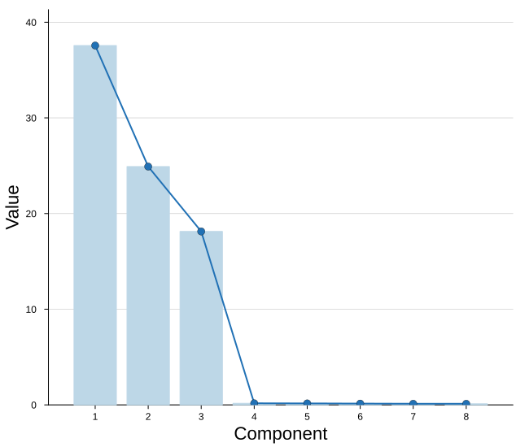
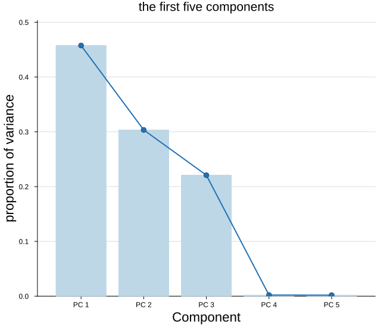
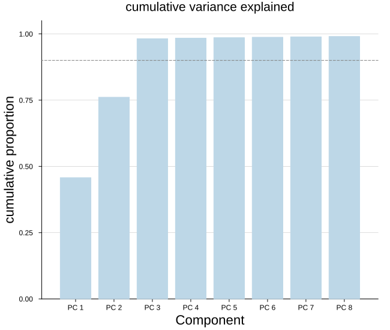
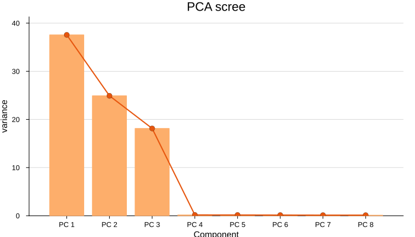
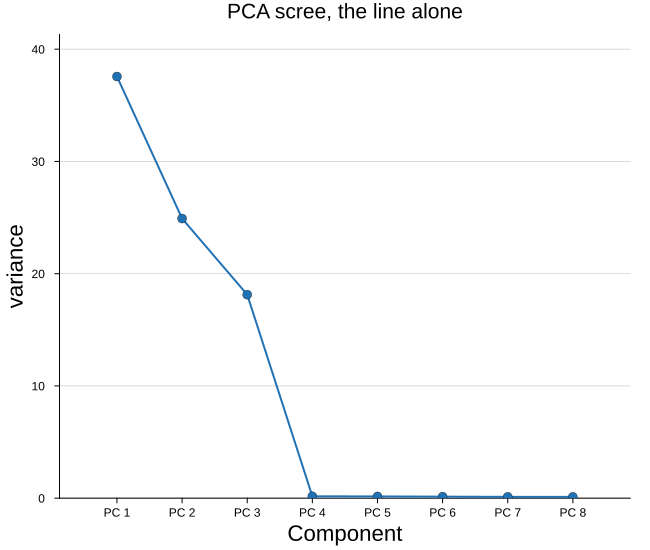

Scree plot
The scree plot draws one bar per component, with a line riding their tops. The fall from the first component to the last is what we read: where it flattens is the elbow, and the components before it are the ones worth keeping.
plot_scree(values; ncomp = 0, compnames = ..., cumulative = false, kwargs...)It takes a plain vector of one value per component, so it is not tied to any model. Each model passes whatever field measures the strength of its components:
| Model | Call |
|---|---|
pca | plot_scree(m.variances) |
spc | plot_scree(m.variances) |
pmd | plot_scree(m.d) |
cca | plot_scree(m.corrs) |
scca | plot_scree(m.cors) |
jive | plot_scree(vcat(m.r, m.ri)) |
The regression and discriminant models — plskern, plsda, splsda — store no per-component strength, so they have no scree to draw.
Setup
using BigRiverEssence
using BigRiverPlots
using Plots
using StableRNGsA simulated example
The same data as the other notebooks: three latent signals driving twenty variables. Because only three signals are at work, we expect the scree to fall sharply after the third component — that fall is exactly what the plot is for.
rng = StableRNG(20240801)
n = 90 # observations
p = 20 # variables
latent = randn(rng, n, 3)
X = latent * randn(rng, 3, p) .+ 0.3 .* randn(rng, n, p)
m = pca(X; k = 8)
round.(m.variances, digits = 3)8-element Vector{Float64}:
37.563
24.911
18.13
0.166
0.154
0.134
0.117
0.114The default plot
Given the variances, we get a bar per component with the line on top and the components ticked by index. The elbow after the third component should be plain.
plot_scree(m.variances)
Modifying the plot
There are two things to decide, and they are independent.
The first is what quantity we pass, which the plot never chooses for us:
m.variances— the raw variance of each component, which falls offm.propOFvar— the same shape scaled to sum to one, so we can say "PC1 explains 55%"
The second is whether it is summed, which is what cumulative controls. Passing propOFvar with cumulative = true gives the rising curve we read against a threshold.
On top of that, ncomp truncates the tail, compnames names the components, and showline removes the line.
Naming and truncating
compnames names the components — passed as an argument rather than as xticks, because the names are subset along with the values, so a truncated plot keeps the right labels. ncomp keeps only the leading components, dropping a long flat tail that tells us nothing.
Here we also switch from raw variance to the proportion, which makes the y axis directly interpretable.
plot_scree(m.propOFvar;
compnames = ["PC $(j)" for j in 1:8],
ncomp = 5,
ylabel = "proportion of variance",
title = "the first five components")
The cumulative view
With cumulative = true the running total is drawn instead of the per-component value. Read against the proportion of variance it answers the practical question directly: how many components do we need to reach 90 percent?
We drop the line here with showline = false. On a cumulative curve the bars rise to a plateau near one and the line rides that plateau, which reads oddly — bars alone are cleaner. We also draw a threshold across the plot to read against.
plot_scree(m.propOFvar;
compnames = ["PC $(j)" for j in 1:8],
cumulative = true,
showline = false,
ylabel = "cumulative proportion",
title = "cumulative variance explained",
ylims = (0, 1.05))
hline!([0.9]; linestyle = :dash, color = :grey, label = "90%")
Colors and the rest
Two color knobs of our own: barcolor for the bars and linecolor_ for the line on top. The trailing underscore is deliberate — linecolor is a standard Plots attribute, so the bare name would be intercepted before it reached us.
Everything else the plot sets for itself yields to what we pass, so the usual attributes stack on top.
plot_scree(m.variances;
compnames = ["PC $(j)" for j in 1:8],
barcolor = "#fdae6b",
linecolor_ = "#e6550d",
ylabel = "variance",
title = "PCA scree",
size = (700, 400),
guidefontsize = 10)
The line alone
Some readers prefer the scree as a plain curve, without the bars underneath. The elbow is what we came to find, and the bars mostly restate what the line already shows — so on a small figure, or beside several others, dropping them leaves a cleaner shape.
Passing alpha will not do it: the bar color is set by the plot itself, so a global transparency either gets overridden or fades the line along with it. We make the bar color transparent instead, which leaves the line and the markers untouched.
plot_scree(m.variances;
compnames = ["PC $(j)" for j in 1:8],
barcolor = :transparent,
ylabel = "variance",
title = "PCA scree, the line alone")